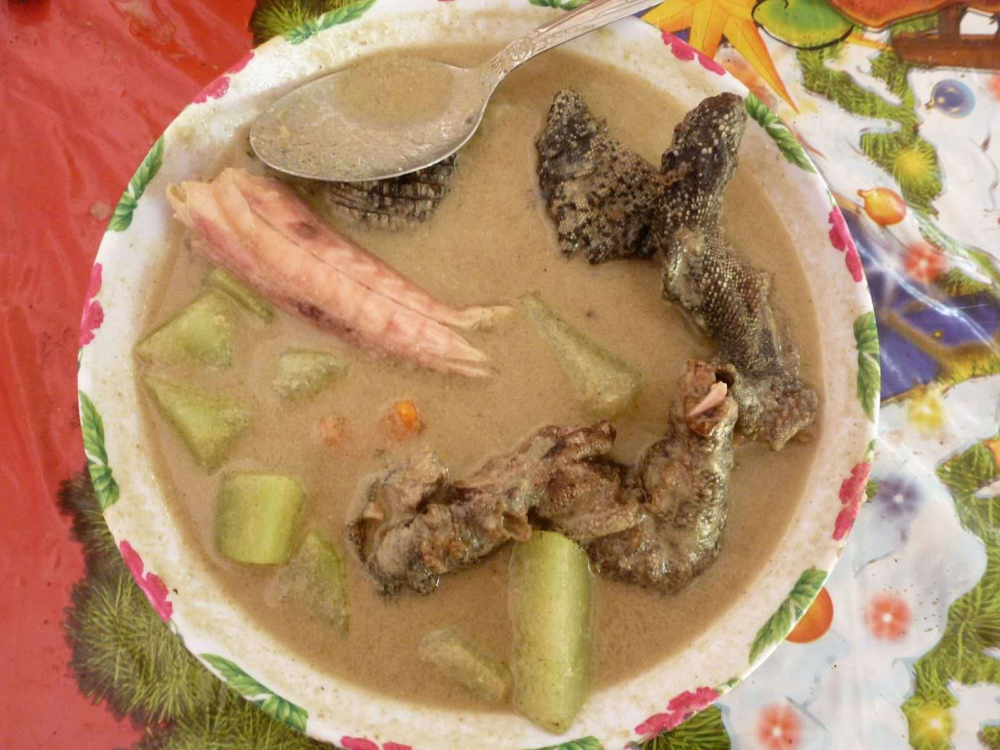

Radroach Stew

"A Wasteland classic that’s surprisingly nutritious—if you can get past the twitching legs."
Ingredients
- 1 freshly caught Radroach (or substitute with chicken thighs)
- 3 cups of purified water (or boiled Brahmin milk if you’re fancy)
- 2 Mutfruit, diced
- 1 handful of Razorgrain
- A pinch of Nuclear Spice (or chili powder)
- Remove the Radroach shell (trust me, it’s crunchy enough as is).
- Boil purified water in a rusty, irradiated pot. Add Razorgrain and cook until soft.
- Toss in Radroach meat and Mutfruit chunks. Simmer until the stew glows… I mean, thickens.
- Season with Nuclear Spice and serve in a dented tin can for maximum authenticity.
Survial Tip: Don’t forget to remove the venom glands—they add too much tang!